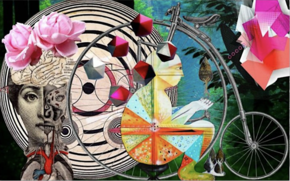
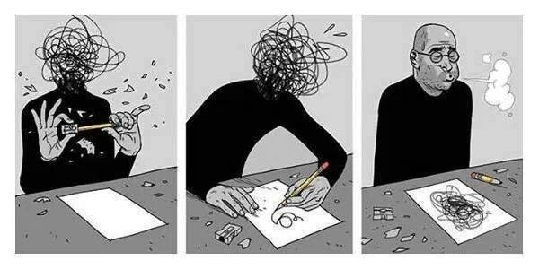
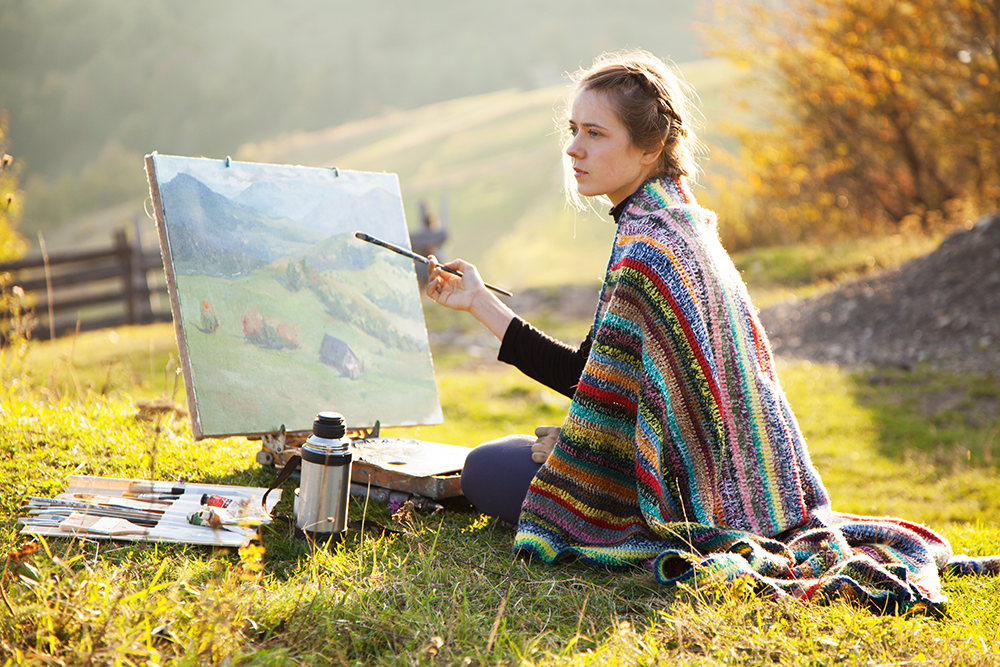
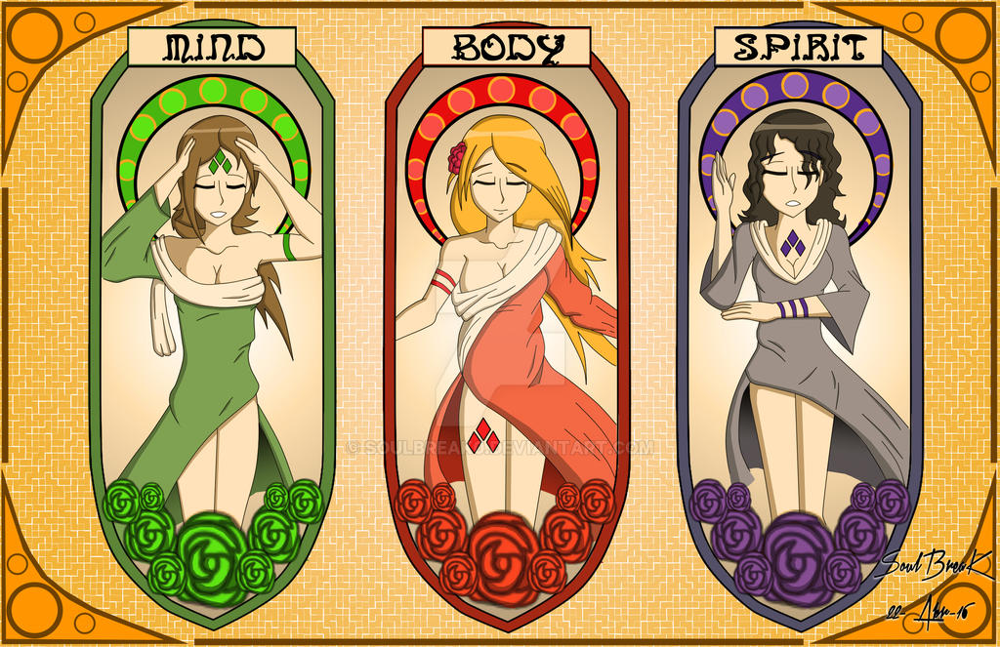

How is art used as an outlet?
1. Self-Expression

Art is for everyone. From children to adults, a creative outlet is important for self-expression. For children, art projects can help in self-discovery. Analyzing the way a child's brain works versus an adults can help adults understand their children better. Art for adults could help with reconnecting with your inner child or your true self. Learning what works for you and what doesn't helps with problem solving.
2. A break from anxiety

Creating art means that one can tune into their feelings without using their words. This can be a helpful tool for anxiety because you are actively and physically working on something you care about. This may either get your mind off of your anxiety, or might spark a new way of coping with uncomfortable feelings that are hard to pin-point.
3. Time for yourself 
Whether you're busy with work or school, making art is a great way of reconnecting with yourself. This is an oppotunity to focus on one's mental state and focus. This is also a perfect time to find new music or just sit in silence with your thoughts.
4. Healther body, mind and spirit

According to research, doing something you enjoy such as creating art can lower your blood pressure. It can also reduce negative thoughts and even levels of depression.